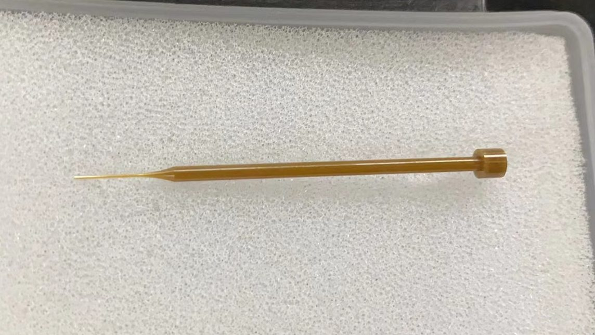

Application Industries
- electronics fixtures
- ceramic locating pins
- insulating tooling parts
- wear-resistant guide components
- precision positioning parts
- custom ceramic inserts
Ceramic Components / Custom Machining
Long-form SEO page for ceramic parts, including applications, materials, tolerances, equipment, quality control and RFQ guidance for overseas industrial buyers.

Application Industries
Materials
Tolerances
Equipment
Dongguan Jinyi Precision Technology Co., Ltd. provides ceramic parts and custom precision machining support for international industrial buyers. The company is located in Dongguan, China, a manufacturing area with strong mold, connector, electronics and automation supply chains. For buyers in the United States, Japan, Germany, Malaysia, Singapore, the goal is not only to find a low-cost machining vendor, but to identify a supplier that can understand drawings, communicate clearly, protect confidential data, select the correct process route and deliver components that can be verified by quality engineers.
The typical buyer for this service includes mold manufacturers, connector manufacturers, automation equipment companies, precision component buyers, purchasing managers, mechanical engineers, quality engineers. These teams usually care about material selection, tolerance, lead time, inspection method, documentation and fast RFQ communication. Jinyi Precision positions its work around precision mold components, connector tooling, carbide parts, ceramic parts, wire EDM, PG profile grinding, mirror EDM and precision grinding. This process mix helps customers source difficult components that may require more than one machining method.
ceramic parts are used in production systems where ordinary machined components cannot satisfy the combination of hardness, accuracy, small features and repeatability. Common industries include precision mold manufacturing, connector production, electronic component manufacturing, automation equipment, precision stamping and fixture building. Customers may request a single prototype, a small batch for validation, or repeat orders for production maintenance.
For mold manufacturers, the priority is usually fit, datum control, edge condition and stable assembly. Connector manufacturers often focus on micro profiles, punch life, burr control and dimensional consistency. Automation equipment companies may need wear-resistant locating parts, ceramic pins, custom plates or tooling inserts. Purchasing managers need quotation speed, clear lead time and reliable communication, while mechanical engineers and quality engineers need practical feedback on tolerances and inspection.
Material selection strongly affects the process route, cost and final accuracy. For this service, common material options include ZKA-901, NPZ-28, NPZ-1, application-specific ceramic materials, customer-specified ceramic blanks. Some projects specify Japanese carbide or steel grades, while others allow alternative materials from Taiwan or China when cost, availability and performance targets permit. Jinyi Precision can review material options when the customer provides application information and expected service life.
When requesting a quotation, buyers should include the exact material grade whenever possible. If the material is not fixed, the RFQ should explain the part function, wear condition, contact material, required hardness, coating preference and expected production volume. This information allows the supplier to recommend whether the part should be made from carbide, steel, ceramic or another specified material. It also helps avoid inaccurate quotations caused by vague material descriptions.
Tolerance is one of the most important topics for ceramic parts. Reference capabilities for this service include tolerance reviewed by ceramic grade and feature geometry; edge condition controlled according to drawing; inspection datums confirmed before quotation; surface requirement reviewed before process planning. These values should be treated as process references rather than universal promises for every feature. Actual achievable tolerance depends on material, geometry, thickness, datum design, measurement method, heat treatment and whether the part requires multiple processes.
Jinyi Precision recommends that international buyers mark critical dimensions clearly on the drawing. If only a few features are function-critical, those features should be identified. If a dimension is for reference only, it should not be treated the same as a critical assembly dimension. Clear drawings allow the engineering team to choose the right equipment, inspection method and production sequence. This reduces rework risk and improves quotation accuracy.
Relevant equipment for this service includes precision grinding equipment, projector inspection, tool microscope inspection, height gauge and surface measurement support. A professional supplier should not only list machines, but also explain how the equipment is used together. For many precision mold and connector components, the final route may combine rough machining, wire EDM, PG grinding, mirror EDM, precision grinding, small-hole drilling and inspection.
Process planning begins with drawing review. The team checks material, critical tolerance, machining access, thin walls, inside radii, surface roughness and inspection datums. If one process cannot safely create every feature, the job may be divided into multiple operations. For example, a mold insert may be prepared by machining, profiled by wire EDM, finished by grinding and checked by projector or height gauge. This practical planning is important for reliable overseas sourcing.
To receive a fast and realistic quotation, buyers should provide PDF drawings and, when available, STEP, STP, DWG or DXF files. The RFQ should include material, quantity, tolerance, surface treatment, coating, heat treatment, delivery target and the intended application. If the project is confidential, Jinyi Precision can support NDA communication before detailed drawing review.
A complete RFQ helps the supplier respond within a practical timeframe. Jinyi Precision targets 24-hour RFQ response after receiving complete information. If the drawing is incomplete, the team may ask questions about material, datum, tolerance or inspection. These questions are not delays; they are part of preventing wrong assumptions. For overseas buyers, this communication is especially valuable because shipping and rework costs can be significant.
Quality control for ceramic parts should be based on the drawing and the function of the component. Inspection may include optical projection, height gauge measurement, tool microscope review, surface roughness measurement, CMM measurement or other methods depending on the part. The supplier should confirm how critical dimensions will be checked before production begins.
Jinyi Precision promotes a quality-focused workflow supported by ISO9001 certification, controlled processing environment and standardized inspection thinking. For international buyers, this means the project can be discussed in terms of measurable features rather than vague quality claims. When a customer needs inspection records or special checking points, those requirements should be stated during RFQ so the team can include them in the quotation.
The target markets for this website include the United States, Japan, Germany, Malaysia, Singapore. Buyers from these regions often require clear English communication, drawing confidentiality, fast RFQ response and stable export communication. Jinyi Precision supports overseas inquiries by email and WhatsApp, making it easier for purchasing managers and engineers to clarify drawings, materials and delivery expectations.
International sourcing is not only a price comparison exercise. A reliable supplier should explain manufacturing feasibility, identify risks, confirm inspection methods and communicate quickly when something in the drawing is unclear. This is especially important for mold components, connector tooling and automation parts where one small tolerance issue can affect assembly or production uptime.
Precision Ceramic Pin - Market: Electronics Industry. Challenge: The buyer needed a small ceramic pin with insulation, wear resistance and stable positioning behavior in an electronics fixture. Solution: Contact surface, edge condition, inspection datum and handling risk were reviewed before selecting precision grinding steps. Result: The final component supported fixture positioning requirements while reducing risk from unclear edge and surface assumptions.
This type of case is common in B2B precision manufacturing because buyers are not simply purchasing a shape. They are purchasing a functional component that must fit into a tool, fixture, machine or inspection system. The value of the supplier is measured by drawing understanding, process selection, communication and the ability to deliver parts that can be checked against agreed requirements.
FAQ
Jinyi lists ZKA-901, NPZ-28 and NPZ-1, and can review other ceramics according to customer drawings.
Yes. Ceramic parts are often selected for insulation, wear resistance and stable positioning in electronics fixtures.
Please include tolerance, critical surfaces, edge requirements, contact areas and application environment.
Prototype and small-batch ceramic components can be reviewed based on part geometry and material availability.
RFQ Request
Please include material, quantity, tolerance, surface requirement and target delivery date in the form. Please send PDF, STEP, STP, DWG or DXF drawings by Email or WhatsApp after submitting the RFQ form.